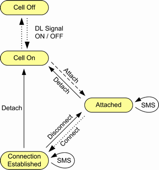

The main connection states related to the primary packet-switched connection are described in the following table. They are related to the PCC downlink and uplink connection. The states are displayed in the main view as "Packet Switched" (PS) state.
PS state | Description |
|---|---|
"(Cell) Off" | No downlink signal transmission |
"(Cell) On" | The R&S CMW emulates an E-UTRAN cell, transmitting an LTE signal to which the UE can synchronize. After synchronization, the UE can initiate an attach towards the instrument. |
"Attached" | Synchronization and attach have been performed. A default bearer has been established. Depending on parameter "Keep RRC Connection", a radio resource control (RRC) connection is still established or has been released. To send or receive SMS messages, to start an inter-RAT handover or to establish an SCC connection, an established RRC connection is required. |
"Connection Established" | A dedicated bearer has been set up. An RRC connection has been established (during attach or during connect). User data can be exchanged via shared channels. The R&S CMW can vary connection parameters, perform transmitter and receiver tests, or initiate a handover. |
State transitions can be initiated by the instrument or by the UE. The following figure provides an overview.

- "Signaling in Progress"
For example, displayed during attach or when the channel changes for an established connection. - "Connection in Progress"
Displayed during connection setup. - "Sending Message"
Displayed while an SMS message is sent to the MS. - "Receiving Message"
Displayed while an SMS message is received from the MS. To check the received message, see "Incoming SMS". - "Incoming Handover in Progress"
Displayed while a handover is received (not for handover within signaling application). - "Outgoing Handover in Progress"
Displayed while a handover to another signaling application / instrument is performed. - "Disconnect in Progress"
The list of transitions in Figure "PS state transitions" is not complete. The "Off" state can be reached from any state by turning off the cell signal. Moreover, incidents like an alerting timeout or a loss of the radio link cause additional transitions. A handover within the signaling application can be performed in the "Connection Established" state. An inter-RAT / inter-instrument redirection can also be performed in the "Attached" state (established RRC connection required). |